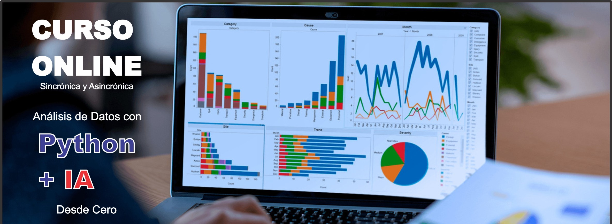

✅ INSCRIPCIÓN : https://forms.gle/rHj7KsVs2YqAy2zz6
✅ Costo Total: 350.000gs
Incluyen: Materiales + Grabaciones + Certificado
✅ Hora: 19:00 a 21.30hs.
✅ Inicio: Jueves 10 de octubre (6 sesiones)
"Descuento especial para grupos de 2 o más personas"
- 2 pers. 300mil c/u
- 3 pers. 250mil c/u
- 4 pers. o más 200mil c/u
✅ Formas de Pago:
Transf. bancaria:
Banco Itaú
Cuenta N° 720005407
Titular: Oscar González Frutos
CI: 3584172
Giros Tigo:
0983 352 932
✅ Enviar comprobante aquí.
✅ Escribir al WhatsApp: https://wa.me/595983352932
DOCENTE: Oscar González Frutos
Sesión 1: Introducción a Python y Herramientas para Análisis de Datos
- Objetivos: Entender las bases de Python y cómo usarlo en análisis de datos. Configurar el entorno de trabajo con las bibliotecas necesarias, y aprender a usar IA para sugerir mejoras en los scripts.
- Temas:
- Breve repaso de Python: Tipos de datos, operadores, estructuras de control.
- Instalación de bibliotecas para análisis de datos: NumPy, Pandas, Matplotlib.
- Introducción a Jupyter Notebooks.
- Sugerencias de IA: Introducción a asistentes de código basados en IA, como GitHub Copilot o ChatGPT, para agilizar la escritura y depuración de código en Python.
- Ejercicio práctico: Instalar y configurar el entorno de trabajo (Jupyter Notebooks, NumPy, Pandas) y experimentar con asistentes de código.
Sesión 2: Manipulación de Datos con Pandas
- Objetivos: Aprender a cargar, inspeccionar y manipular datasets con Pandas, y cómo usar IA para optimizar estos procesos.
- Temas:
- Introducción a Pandas y su estructura fundamental: DataFrame.
- Lectura de archivos CSV, Excel, SQL, etc.
- Operaciones básicas: Selección de columnas y filas, filtros, descripciones estadísticas.
- Limpieza de datos: Manejo de valores nulos, duplicados y formateo de datos.
- Sugerencias de IA: Uso de IA para generar y optimizar consultas de manipulación de datos en Pandas y sugerir mejores prácticas.
- Ejercicio práctico: Cargar un dataset CSV y realizar análisis exploratorio (filtrado, resumen estadístico, limpieza) con recomendaciones generadas por IA.
Sesión 3: Análisis Numérico con NumPy
- Objetivos: Trabajar con datos numéricos eficientemente usando NumPy y explorar cómo la IA puede ayudar en operaciones matemáticas complejas.
- Temas:
- Introducción a NumPy: Arrays y sus ventajas.
- Operaciones matemáticas básicas y avanzadas con arrays.
- Estadísticas descriptivas con NumPy.
- Manipulación de arrays: Indexación, slicing, y transformaciones.
- Sugerencias de IA: Utilización de IA para sugerir funciones numéricas y optimizar cálculos.
- Ejercicio práctico: Crear arrays de datos numéricos y realizar operaciones estadísticas simples con asistencia de IA para mejorar el rendimiento.
Sesión 4: Visualización de Datos con Matplotlib y Seaborn
- Objetivos: Visualizar y comunicar datos de manera efectiva, incorporando IA para sugerir los gráficos más adecuados.
- Temas:
- Introducción a la visualización de datos: Importancia y tipos de gráficos.
- Creación de gráficos básicos con Matplotlib (líneas, barras, dispersión).
- Visualización avanzada con Seaborn: Mapas de calor, gráficos de distribución y box plots.
- Personalización de gráficos (etiquetas, colores, estilos).
- Sugerencias de IA: Uso de IA para analizar el dataset y sugerir los gráficos más relevantes para visualizar los datos.
- Ejercicio práctico: Visualizar los datos de un dataset con gráficos de barras, líneas y dispersión, interpretando los resultados con sugerencias de IA.
Sesión 5: Análisis de Datos con Estadística Descriptiva
- Objetivos: Realizar análisis descriptivo de datos para obtener insights, con la ayuda de IA para detectar patrones y correlaciones.
- Temas:
- Introducción a la estadística descriptiva: Media, mediana, moda, desviación estándar.
- Agrupación y agregación de datos con Pandas.
- Identificación de correlaciones entre variables.
- Análisis de distribuciones.
- Sugerencias de IA: Emplear IA para detectar correlaciones y patrones no obvios, sugiriendo posibles análisis adicionales.
- Ejercicio práctico: Realizar un análisis estadístico descriptivo de un dataset, mejorado con las recomendaciones de IA.
Sesión 6: Proyecto Final – Análisis Completo y Modelos Predictivos
- Objetivos: Aplicar todo lo aprendido en un proyecto final, enfocándose en la creación de modelos predictivos (regresión y clasificación) y usando IA para optimizar el proceso.
- Temas:
- Carga y limpieza de un dataset.
- Exploración de los datos y análisis estadístico.
- Creación de modelos de regresión y clasificación: Explicación de modelos básicos como regresión lineal y modelos de clasificación (Logistic Regression, Random Forest, etc.).
- Realización de predicciones basadas en los modelos creados.
- Interpretación y presentación de los resultados de los modelos.
- Sugerencias de IA: Usar IA para seleccionar los mejores modelos predictivos, ajustar hiperparámetros y optimizar la precisión de las predicciones.
- Ejercicio práctico: Seleccionar un dataset, limpiar los datos y crear un modelo predictivo (regresión o clasificación), realizar predicciones y optimizar el modelo con la ayuda de IA.